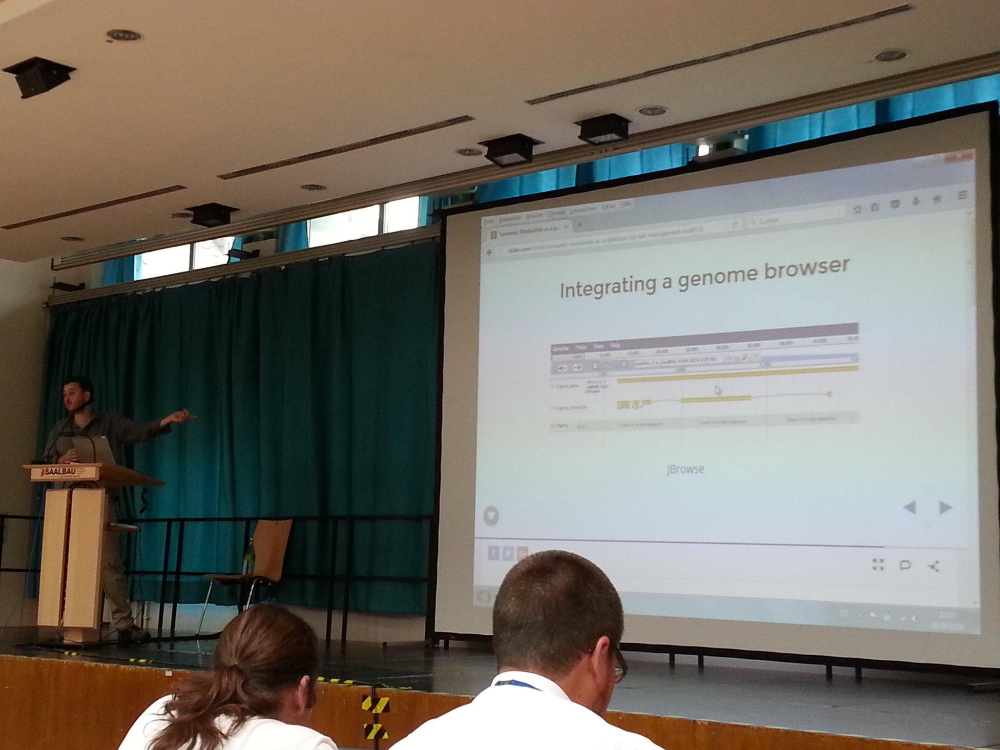

SMWCon Fall 2016 - My talk on large RDF imports
[I was invited to give a talk at ]Semantic MediaWiki (SMW) conference [ (SMWCon) in Frankfurt last week, on our work on enabling import of RDF datasets into ]SMW [. I have presented at SMWCon before as well (2011: ]blog [, ]slides [, ]video [, 2013: ]slides [), so it was nice to re-connect with some old friends, and to get up to date about how SMW is developing, as well as share about our own contributions.]
Note: See also the SMWCon 2016 twitter storyboard for a nice overview of the event.
The Talk - on RDF Import in Semantic MediaWiki
[My talk this year was titled “Batch import of large RDF datasets using RDFIO or the new rdf2smw tool”. More info can be found on the ]talk page [. S]lides are available on slideshare (video to appear on the talk page later):
I will refer to the slides and the talk page for more info on the talk itself, and just leave the links to the softwares discussed here below:
- The RDFIO extension - Pure PHP RDF import and SPARQL endpoint for SMW
- RDFIO Vagrantbox - Automated setup of a virtual machine with an SMW wiki with RDFIO
- The rdf2smw tool - Converts RDF to MediaWiki XML
- FlowBase - My flow-based programming inspired micro-framework, used to build rdf2smw
SMW and SMWCon
Firstly, just for info, note that I and a few others tweeted quite extensively during the conference, summarized in this storyboard .
The state of SMW
I otherwise find SMW and SMWCon to have quite an interesting development. Eventhough being a technology developed more than 10 years ago (the SMW paper was published 10 years ago), it is still a thriving community with an active group of developers, (although it turns out the majority of core development is done by one person, “JamesHK / MWJames ”). Many other softwares coming from the same time seem to have been slowly dying to a much larger extent.
Reflecting on the reasons for this fact, I think Markus Glaser summarized one reason pretty well:
“MediaWiki is like a white sheet of paper for data.” - @mrglaser #SMWCon
— WikiWorks (@wikiworks ) 30 september 2016
This goes well along my own reflections, that MediaWiki with its very stable platform (it has to support Wikipedia for many decades to come) and robust import / export facilities, diff-able history and much more, makes it a robust platform upon which to innovate with new technology. Always having the robust underlying text-editing platform means that even if some new extension on top of it bit-rots and stops working, you won’t lose your data or your wiki. You can just disable any bit-rotted extensions and go on with life.
I think this also one reason that makes SMW itself so powerful: Even though SMW has really powerful features, I think its most attractive feature is that the underlying foundation is something you will always be able to manage and which will not suddenly break or bit-rot: after all, it is just text.
I think this aligns well with the recent developments towards keeping development environments purely text-based at their core, which enables using powerful version control software such as git, as well as makes it easy to automate development workflows. Interestingly, in the last talk of the conference (which I sadly missed due to an early flight) I heard that Mark A. Herschberger showed some nice integration of MediaWiki and git. Looking forward to see the video show up here later .
SMW for biology labs
For me as a life science researcher-to-be, it was nice to see I was not the only life scientist at the conference. I enjoyed listening to Toni Hermoso’s talk “Semantic MediaWiki as a platform for lab management and biological annotation ” (slides here ). Interestingly, they have integrated common tools for next-gen sequenging analysis into a wiki, including FASTA and GFF viewers, and, a genome browser(!):

… and, they have a really nice lab website powered by SMW too :)
Toni’s full slides:
More random notes and links
[I will end this post with a few random links and notes I found interesting:]
- Karsten Hoffmeyer , mentioned that SMW 2.5 will come with support for adding provenance info to the semantic facts, to be able to track where info comes from!
- Lydia Pintcher of the very interesting wikidata project (making the data in wikipedia machine readable etc) highlighted that the software behind wikidata, wikibase is fully open source, and avilable to download .
- Sören Auer , in his talk “SMW and Open Scholarly Communication ” mentioned dokie.li , a decentralized paper editor with support for cool things like SPARQL queries, right in your manuscript!
- Sören mentioned also SlideWiki - for collaboratively creating slides for educational use
- Sören finally also mentioned OpenResearch.org - an SMW powered wiki that tries to aggregate scholarly events, organizations, people, journals and more.
[Overall, I was happy to see the SMW development and community still going strong!]{style=“line-height: 22.4px;”}